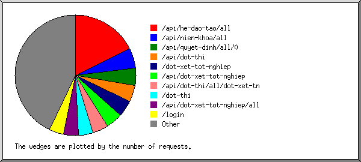

(Go To: Top | General Summary | Monthly Report | Daily Summary | Hourly Summary | Domain Report | Organization Report | Redirected Referrer Report | Failed Referrer Report | Referring Site Report | Browser Report | Browser Summary | Operating System Report | Status Code Report | File Size Report | File Type Report | Directory Report | Request Report)

Listing files with at least 20 requests, sorted by the number of requests.
| #reqs | %bytes | last time | file |
|---|
| 351 | 0.20% | Sep/ 5/24 10:32 PM | /api/he-dao-tao/all |
| 278 | 0.16% | Sep/ 5/24 10:32 PM | /api/he-dao-tao/all?filter_role=1 |
| 106 | 0.14% | Sep/ 5/24 10:32 PM | /api/nien-khoa/all |
| 91 | 0.49% | Sep/ 3/24 9:31 PM | /api/quyet-dinh/all/0 |
| 88 | 0.47% | Sep/ 3/24 9:36 PM | /api/dot-thi |
| 88 | 1.44% | Sep/ 5/24 10:32 PM | /dot-xet-tot-nghiep |
| 87 | 0.44% | Sep/ 5/24 10:32 PM | /api/dot-xet-tot-nghiep |
| 10 | 0.05% | Sep/ 3/24 8:54 PM | /api/dot-xet-tot-nghiep?search=&tunam=2024&dennam=2024&chuongtrinh=5 |
| 83 | 0.11% | Sep/ 5/24 10:32 PM | /api/dot-thi/all/dot-xet-tn |
| 69 | 0.09% | Sep/ 3/24 9:42 PM | /api/dot-thi/all/dot-xet-tn?chuongtrinh=4 |
| 13 | 0.02% | Sep/ 3/24 9:34 PM | /api/dot-thi/all/dot-xet-tn?chuongtrinh=5 |
| 77 | 1.26% | Sep/ 3/24 9:36 PM | /dot-thi |
| 77 | 0.16% | Sep/ 3/24 9:36 PM | /api/dot-xet-tot-nghiep/all |
| 62 | 0.11% | Sep/ 3/24 9:36 PM | /api/dot-xet-tot-nghiep/all?chuongtrinh=4 |
| 15 | 0.04% | Sep/ 3/24 9:35 PM | /api/dot-xet-tot-nghiep/all?chuongtrinh=5 |
| 76 | 0.53% | Sep/14/24 1:56 AM | /login |
| 60 | 0.81% | Sep/ 3/24 9:31 PM | /api/khoa-dao-tao/all |
| 12 | 0.16% | Sep/ 3/24 9:31 PM | /api/khoa-dao-tao/all?hedaotao=undefined |
| 47 | 0.77% | Sep/ 5/24 10:32 PM | /nhap-diem |
| 46 | 0.30% | Sep/ 5/24 10:32 PM | /api/nhap-diem |
| 31 | 0.16% | Sep/ 3/24 9:26 PM | /api/quyet-dinh/all/1 |
| 31 | 0.11% | Sep/ 3/24 9:26 PM | /api/quyet-dinh/all/2 |
| 30 | 6.46% | Sep/11/24 7:45 PM | /css/admin.css |
| 25 | 5.31% | Sep/11/24 7:45 PM | /css/admin.css?v2.2.37 |
| 30 | 0.12% | Sep/11/24 7:45 PM | /css/admin2.css |
| 25 | 0.10% | Sep/11/24 7:45 PM | /css/admin2.css?v2.2.37 |
| 28 | 35.52% | Sep/11/24 7:45 PM | /js/admin.js |
| 23 | 28.33% | Sep/11/24 7:45 PM | /js/admin.js?v2.2.37 |
| 547 | 50.50% | Sep/ 5/24 10:37 PM | [not listed: 143 files] |
 Web Server Statistics for democea.ttdat.id.vn.tracuudiem.cea.edu.vn
Web Server Statistics for democea.ttdat.id.vn.tracuudiem.cea.edu.vn ) represents 1 request for a page.
) represents 1 request for a page.